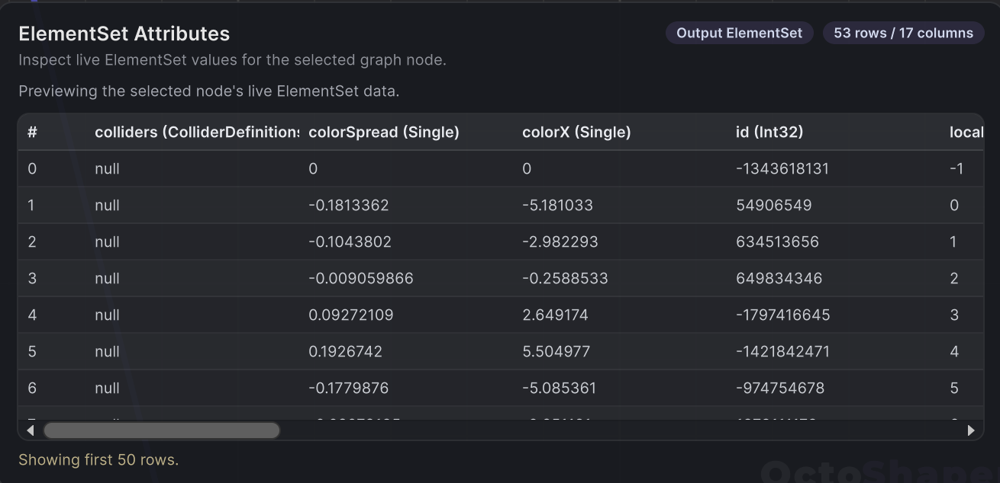

Elements, ElementSets and Attributes
Almost every wire in an OctoShaper graph carries an ElementSet, a table where each row is one element and each column is a named attribute. Once you picture that table, every node becomes easy to read. It adds rows, removes rows, or changes columns.
An ElementSet is a table
A graph is rarely thinking about one rock or one window. It works on a whole table of them and decides which rows to add, remove or enrich. That table is the ElementSet.
An element can be a scatter point, a building piece, a spawned prefab, a spline sample or a vertex of a procedural mesh. The label doesn't matter. What matters is that each row keeps every value for that one element, and nodes process all rows together.
Attributes are named columns
Every attribute has a name and a type. Nodes find columns by name, so the names are the contract between nodes.
| Attribute | Type | Written by |
|---|---|---|
position, rotation, scale |
Vector3, Quaternion, Vector3 | Distribution and spatial nodes, most generators |
id |
Integer | Generators; used for stable randomness |
sourceRowIndex, localIndex |
Integer | Expanders: which input row a new row came from |
parentRowIndex |
Integer | Assemblies and hierarchies |
prefab, renderDefinition |
Prefab, render data | Rendering nodes |
mesh |
Mesh | Realize Meshes and Assign Mesh |
tint, uv0 |
Color, Vector2 | Color and texture nodes |
| anything you name | Float, Int, Bool, String, Vector3… | Set … Attribute nodes and nodes with a result name input |
You can create your own attributes freely. height, biome and isEdge are all fine names. Name inputs are shown in the node catalog as attribute-name inputs.
Tip: Open Show Spreadsheet in the graph toolbar to see the table produced by the selected or pinned node. It is the fastest way to check that a column exists and holds the values you expect.

Why columns make graphs fast
OctoShaper stores each attribute as its own packed column rather than as a list of objects. That layout is what lets heavy nodes run as Burst-compiled jobs over plain arrays.
In practice this means:
- Big counts stay cheap. Scattering tens of thousands of points is a sweep over a few arrays, not tens of thousands of objects.
- Untouched columns are free. A node that only moves
positionnever readstintorprefab. Those columns are passed along as they are. - The expensive part is at the end. Creating GameObjects costs far more than computing rows. Prefer GPU instancing for large, purely visual populations.
Constant or attribute inputs
Many node inputs show a Constant / Attribute switch. Their type ends in Or Attribute in the node catalog, for example Float Or Attribute.
- Constant: one value for every row. This is the default, and it is the fastest option.
- Attribute: type a column name, and each row uses its own value. Missing or wrongly typed attributes produce an error that names the column.
Nodes ending in Attribute, like Color Ramp Attribute or Sample Texture Attribute, evaluate per element and write their result into a named column. Downstream, select that name in another node's Attribute mode.
Requirements and connections
Some nodes declare the attributes they require and the ones they write. The graph editor uses these contracts while you wire:
- Hover an ElementSet port to see required and available attributes.
- A rejected connection explains what is missing. For example, material override nodes need
renderDefinition, which only a draw node adds. - Fix it by adding the missing attribute upstream, or by connecting a different input.
These checks describe declared contracts. A value can still be invalid at runtime, for example an empty mesh.
What nodes do to the table
Generate: create rows or expand each row into many (Distribute Points In Grid, Expand Per Element, Box Mesh).
Modify: write or overwrite columns (Jitter Positions, Set Float Attribute, Color Ramp Attribute).
Filter and combine: drop rows (Filter, Take First N, Probabilistic Cull), split them (Split By Bool Attribute), or join tables with the built-in Merge node, which accepts any number of links.
Consume: turn rows into something Unity shows (Spawn Prefab, Draw Instanced, Add Box Collider).
Mesh generators add one twist: their ElementSet also carries topology, meaning faces connect the rows. See Procedural meshes.
Where to go next
- Node graph basics covers Main Input, Main Output and parameters around the table.
- Rendering and instancing modes explains how the final rows become objects or GPU instances.
- The node catalog lists what every node requires and writes.
Frequently asked questions
What is an ElementSet in OctoShaper?
position, rotation, scale or tint.Why does OctoShaper store attributes in columns?
What is the difference between a Constant and an Attribute input?
Why was my connection rejected?
renderDefinition for material override nodes. Hover the port to see what is required, then add the missing attribute upstream.